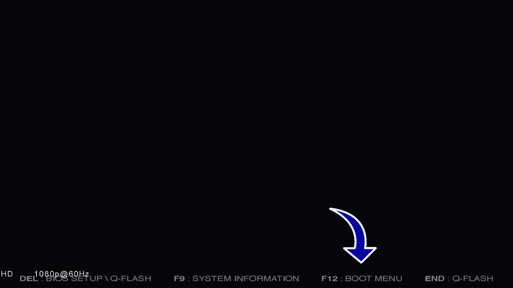
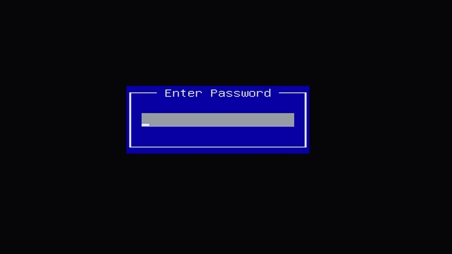
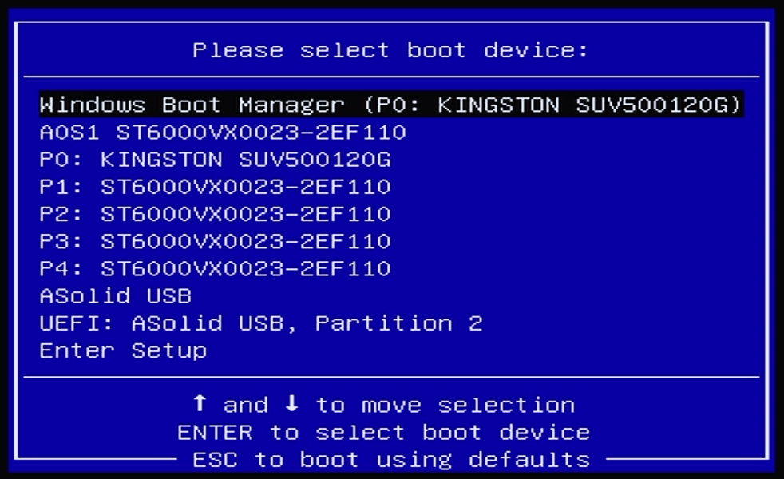
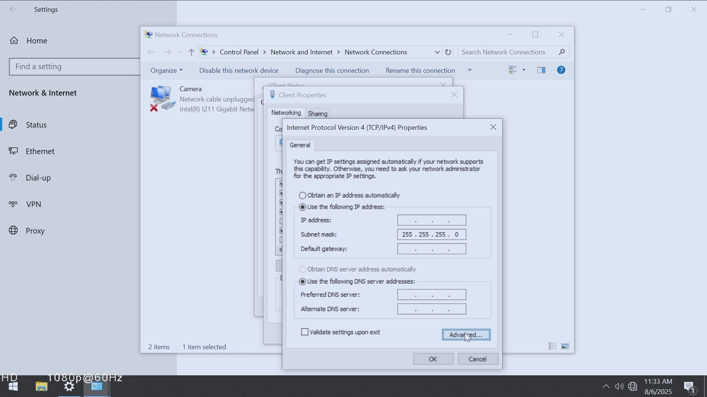

Creating a USB Recovery Drive
Reference: OpenEye Guide — Creating a USB Recovery Drive
- Check image version in OWS (Help → About) and download the correct ISO.
- Download and run Rufus.
- Select ISO and configure:
- Linux — FAT32, GPT, UEFI
- Windows — NTFS, GPT, UEFI
- Start, confirm wipe, and wait for completion.
- Eject USB safely.

System Recovery/Reinstall via USB
Reference: OpenEye Guide — System Recovery via USB
- Insert USB into USB port.
- Reboot & press correct boot key.
- Most Models - F12 key
- MV model units - F7 key
- MD model units - ESC to get to the BIOS. Hit ESC after exiting to load the boot menu

- Password if prompted:
dvr4321.

- Select UEFI USB from boot menu. 
- Follow on-screen instructions to complete recovery.
- Enter Serial Number for Server
- Wait for system to reboot.


Network Settings Setup
- Access the network settings menu. 
- Re-enter the network settings from before the reset.
Apex Software Update Process
- Go to settings and select Software update
- Enter link to update Software
https://files.openeye.net/apex/release/commercial/APX_x64_windows_3.2.6.253.exe - Import config backup for that store if availible.
Windows 11 Update Process
1) Check Compatibility
- Find out what version of windows is present on Server localy
- In OWS: Reports → Inventory Report → Recording Devices.
- Confirm motherboard is in compatibility list.

- GA-Q670M-D3H
- GA-Q570M-D3H
- GA-Q370M-D3H
- GA-B360N-GSM
- MQ67EBI-SI
- IMB-1210-D
- H310I-IM-A R2.0
Files and Links
- Use this link if your image version starts with OE and ends with L: OE.327293.06L.iso
- Use this link if your image version starts with OEU and ends with L: OEU.327293.06L.iso
- Use this link if your image version starts with OE and ends with X: OE.325222.01X.iso
- Use this link if your image version starts with OEU and ends with X: OEU.325222.01X.iso
- Rufus
- CheckDisk
- Apex Software 3.2.6
- Radmin Server 3.5.2
- Command Station Software
- OWS - Web Services
- OpenEye Guide — Creating a USB Recovery Drive
- OpenEye Guide — System Recovery via USB